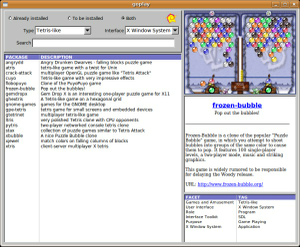

GoPlay!
Dieser Artikel wurde für die folgenden Ubuntu-Versionen getestet:
Ubuntu 16.04 Xenial Xerus
Ubuntu 14.04 Trusty Tahr
Zum Verständnis dieses Artikels sind folgende Seiten hilfreich:
GoPlay! hat mit Debian 5.0 „Lenny“ das Licht der Welt erblickt und soll in erster Linie dabei helfen, Spiele schneller finden zu können. Jedoch kann man mit diesem Programm auch nach Programmen einer bestimmten Kategorie suchen, was es zu einem nützlichen Werkzeug macht. Im Grunde ist das Werkzeug nur eine grafische Oberfläche, die Debtags zum Durchsuchen benutzt.
Installation¶

GoPlay! kann über das folgende Paket installiert werden [1]:
goplay (universe)
 mit apturl
mit apturl
Paketliste zum Kopieren:
sudo apt-get install goplay
sudo aptitude install goplay
Benutzung¶
Je nachdem, in welche Kategorie das gesuchte Programm gehört, ruft man das folgende Unterprogramm in einem Terminal [2] auf oder nutzt – bei Ubuntu-Varianten mit einem Anwendungsmenü – den unter "Zubehör" angelegten Menü-Eintrag [3].
| Programmname | Beschreibung |
goadmin | Suche für Administrationsprogramme |
golearn | Suche für Lernsoftware |
gonet | Suche für Netzwerkwerkzeuge |
gooffice | Suche nach Büro-Software wie z.B. Textverarbeitung, Tabellenkalkulation, Projekt- oder Finanz-Manager |
goplay | Suche nach Spielen |
gosafe | Suche für Sicherheitsanwendungen |
goscience | Suche für wissenschaftlichen Anwendungen |
goweb | Suche nach Internetanwendungen |
|  |
| GoPlay! in Aktion |
Das Programm ist relativ simpel eingeteilt. Oben links werden die Suchkriterien gesetzt. Die Ergebnisse werden darunter angezeigt und können ausgewählt werden. Rechts oben findet man ein Bildschirmfoto zum ausgewählten Spiel bzw. Programm. Darunter wird eine kleine Beschreibung mit den dazugehörigen Tags angezeigt.
Eine direkte Installation ist nicht möglich. Hat man den Paketnamen ermittelt, ruft man eines der im Artikel Pakete installieren genannten Programme auf, um das gewünschte Paket zu installieren.
Problembehebung¶
Es kann sein, dass manchmal keine Einträge aufgelistet werden. Um dieses Problem zu lösen, hilft manchmal das Updaten der Tag-Datenbank von Debian und das Zurücksetzen des Caches. Dazu öffnet man ein Terminal und gibt folgende Befehle ein:
sudo debtags update sudo apt-cache reindex
Links¶
GoPlay! – Der Debian Software Store
 - Blogbeitrag, 10/2009
- Blogbeitrag, 10/2009GoPlay! zur Suche nach Spielen und Software einsetzen - Ikhaya, 05/2009 (Grundlage dieses Artikels)
Geh spielen! - GoPlay zur Suche nach Software einsetzen
- Pro-Linux, 04/2009goplay: discover interesting packages
 - Debian Package of the Day, 04/2009
- Debian Package of the Day, 04/2009GoPlay!
- Blogbeitrag, 08/2007Paketverwaltung
 Übersichtsartikel
Übersichtsartikel
- Erstellt mit Inyoka
-
 2004 – 2017 ubuntuusers.de • Einige Rechte vorbehalten
2004 – 2017 ubuntuusers.de • Einige Rechte vorbehalten
Lizenz • Kontakt • Datenschutz • Impressum • Serverstatus -
Serverhousing gespendet von